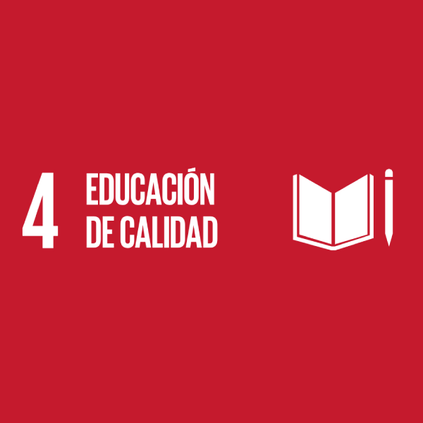

Programa de las Naciones Unidas para el Desarrollo
Conoce mas sobre las metas de este programa a nivel internacional dando click en el botón


La educación forma parte de tanto las necesidades y privilegios que tanto los niños como adultos poseen. Es decir, que no todos obtienen las mismas oportunidades de tener una educación de calidad. Desde la accesibilidad, se tiene que tener en cuenta, que primero se tiene a las comunidades rurales, que se encuentran constantemente en condiciones de pobreza.
El descuido por parte de las autoridades y el poco interés de los recursos económicos a este sector. Hace que la educación en estas comunidades no sea suficiente para satisfacer las necesidades educativas de un estudiante, por una parte, de acuerdo con el INEE:
[...] debido a la lejanía y a las dificultades de acceso, no están sometidas a gran vigilancia de lo que hacen, o bien, tienen supervisores que comprenden su trabajo y dan libertad a los maestros para poner en práctica una educación que responda a las necesidades de sus alumnos (2018, párr. 8).
La lejanía juega un papel importante en el acceso a recursos y alcance a programas de ayuda social. No tomándolos en cuenta, para mejorar su infraestructura y las oportunidades de tener una educación de calidad.
En cuestiones de políticas públicas, es ineficiente, es decir, “la baja asignación de profesores y de muy poco o [...] nulo apoyo material” (INEE, 2018, párr. 6), esto quiere decir que existen escuelas que carecen de lo más indispensable para trabajar en condiciones apropiadas con los estudiantes.
Se tiene que dar a conocer esta problemática que esta tan ignorada en el país, es por eso que se realizará un blog digital, documentando las distintas dificultadas que las zonas rurales presentan. Se entrevistará a tanto estudiantes como maestros de escuelas rurales en Tlaxcala, así, exhortando su punto de vista hacia esta situación, y para así informar sobre qué medidas tanto político como de ayuda social se pueden a hacer de rango estatal.
Y así mismo, presentarlo de manera tal, que despierte el interés de aquellos que tienen los recursos para hacer un cambio, y con esto mejorar socialmente, haciendo un país más equitativo y armónico para todos.
Campana, Y., Velasco, D., Aguirre, J. et al (2014) Inversión en infraestructura educativa: una aproximación a la medición de sus impactos a partir de la experiencia de los Colegios Emblemáticos. Lima: CIES. Recuperado de: https://cies.org.pe/wp-content/uploads/2016/07/20141002_informe_final_colegios_emblematicos_corregido.pdf
Frausto, A. (2017). El rezago educativo total y su atención en México. Revista Latinoamericana de Estudios Educativos, XLVII(2), 41-58. Recuperado de: http://www.redalyc.org/articulo.oa?id=27052400003
Blanco, B., (2009). La desigualdad de resultados educativos: aportes a la teoría desde la investigación sobre eficacia escolar, SciELO, Recuperado de: https://www.scielo.org.mx/scielo.php?script=sci_arttext&pid=S1405-66662009000400003
OCDE, (2016). Panorama de la Educación México 2015, París, Recuperado de: https://www.redalyc.org/pdf/654/65456040009.pdf
Auditoría Superior de la Federación, (2017). Auditoría especial del gasto federalizado. Recuperado de: https://www.ofstlaxcala.gob.mx/auditor_superior


{kind=link}